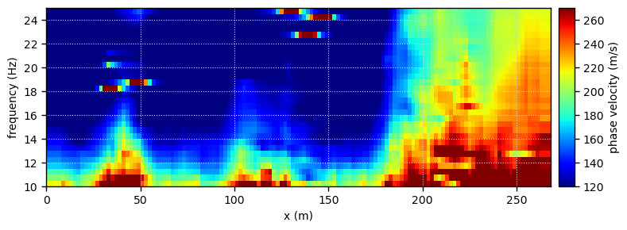
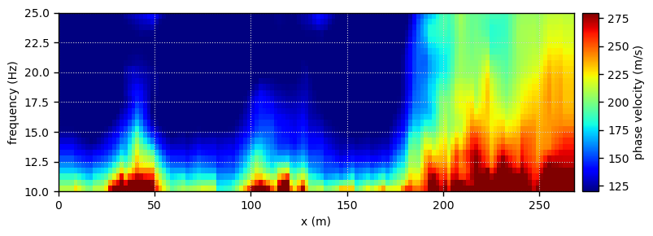

Real case: Mannsworth - Tomo2D
This notebook implements the Tomography-like approach on data from Barone et al. (2021)
[1]:
from pyswapp import *
/home/alberto/anaconda3/envs/pyswapp/lib/python3.9/site-packages/obspy/core/util/base.py:26: UserWarning: pkg_resources is deprecated as an API. See https://setuptools.pypa.io/en/latest/pkg_resources.html. The pkg_resources package is slated for removal as early as 2025-11-30. Refrain from using this package or pin to Setuptools<81.
import pkg_resources
[2]:
# directories
prj_dir = '../../data/real_data' # project directory
path2raw = os.path.join(prj_dir,'raw') # path to raw data
path2geom = f'{prj_dir}/Geometry_mannsworth.csv' # path to the geometry file
[3]:
# processing and plotting settings
settings = create_settings(fmin=5, fmax=30, # frequency range
vmin=10, vmax=500, velstep=1) # testing phase velocity range and step
[4]:
swam = Tomo2DManager(f'{prj_dir}/proc/tomo2D', # project directory path
path2raw=path2raw, # optional, copy & per default rename data from path (outside project directory)
path2geom=path2geom, # optional, copy geom from path (outside project directory)
settings=settings, # optional, define settings for visualisations and processing
rename = False, # optional, rename copied raw data to preferred filename format (Shotfile_<index>), default value is False!
overwrite = False, # optional, overwrite database .db file if it already exists --> create new project data base
)
Warning: Ignoring XDG_SESSION_TYPE=wayland on Gnome. Use QT_QPA_PLATFORM=wayland to run on Wayland anyway.
Loading project:
Reading seismic shot files ..... 10.33 s
Read 82 files and applied geometry and settings.
Active procset label: tomo2D
Existing procsets: raw proc1 tomo2D
Loading amplitude data from "tomo2D" ..... 0.25 s
[5]:
# set a new procset label
procset = 'tomo2D'
swam.set_procset_label(procset)
Active procset label: tomo2D
[6]:
# Retrieve subsets from data corresponding to forward and reverse shots
swam.prepare_streams(min_offset=5, #max_offset=1e6,
min_rec =12, #max_rec=None
)
Trimming data based on offset (SIN,REP) = (43, 2) ..... 9.67 s
A. Pick interactively the FK filter
[7]:
# Isolate the fundamental mode in FK domain
swam.gui_interact('filter','FK')
Loading the GUI ..... 2.32 s
Applying FK filter to (SIN,REP,WID) = (1, 1, 0) and writing to database..... 0.08 s
Applying FK filter to (SIN,REP,WID) = (1, 2, 0) and writing to database..... 0.08 s
Applying FK filter to (SIN,REP,WID) = (2, 1, 0) and writing to database..... 0.08 s
Applying FK filter to (SIN,REP,WID) = (2, 2, 0) and writing to database..... 0.07 s
Applying FK filter to (SIN,REP,WID) = (3, 1, 0) and writing to database..... 0.07 s
Applying FK filter to (SIN,REP,WID) = (3, 2, 0) and writing to database..... 0.08 s
Applying FK filter to (SIN,REP,WID) = (4, 1, 0) and writing to database..... 0.08 s
Applying FK filter to (SIN,REP,WID) = (4, 2, 0) and writing to database..... 0.07 s
Applying FK filter to (SIN,REP,WID) = (5, 1, 0) and writing to database..... 0.09 s
Applying FK filter to (SIN,REP,WID) = (5, 2, 0) and writing to database..... 0.08 s
Applying FK filter to (SIN,REP,WID) = (6, 1, 0) and writing to database..... 0.07 s
Applying FK filter to (SIN,REP,WID) = (6, 2, 0) and writing to database..... 0.09 s
Applying FK filter to (SIN,REP,WID) = (6, 2, 1) and writing to database..... 0.07 s
Applying FK filter to (SIN,REP,WID) = (7, 2, 0) and writing to database..... 0.09 s
Applying FK filter to (SIN,REP,WID) = (8, 2, 0) and writing to database..... 0.08 s
Applying FK filter to (SIN,REP,WID) = (9, 1, 0) and writing to database..... 0.07 s
Applying FK filter to (SIN,REP,WID) = (9, 2, 0) and writing to database..... 0.07 s
Applying FK filter to (SIN,REP,WID) = (10, 1, 0) and writing to database..... 0.09 s
Applying FK filter to (SIN,REP,WID) = (10, 2, 0) and writing to database..... 0.07 s
Applying FK filter to (SIN,REP,WID) = (11, 1, 0) and writing to database..... 0.07 s
Applying FK filter to (SIN,REP,WID) = (11, 2, 0) and writing to database..... 0.08 s
Applying FK filter to (SIN,REP,WID) = (12, 1, 0) and writing to database..... 0.08 s
Applying FK filter to (SIN,REP,WID) = (12, 2, 0) and writing to database..... 0.08 s
Applying FK filter to (SIN,REP,WID) = (13, 1, 0) and writing to database..... 0.07 s
Applying FK filter to (SIN,REP,WID) = (14, 1, 0) and writing to database..... 0.07 s
Applying FK filter to (SIN,REP,WID) = (15, 1, 0) and writing to database..... 0.07 s
Applying FK filter to (SIN,REP,WID) = (16, 1, 0) and writing to database..... 0.07 s
Applying FK filter to (SIN,REP,WID) = (17, 1, 0) and writing to database..... 0.07 s
Applying FK filter to (SIN,REP,WID) = (17, 2, 0) and writing to database..... 0.08 s
Applying FK filter to (SIN,REP,WID) = (18, 1, 0) and writing to database..... 0.07 s
Applying FK filter to (SIN,REP,WID) = (18, 2, 0) and writing to database..... 0.07 s
Applying FK filter to (SIN,REP,WID) = (19, 1, 0) and writing to database..... 0.07 s
Applying FK filter to (SIN,REP,WID) = (19, 2, 0) and writing to database..... 0.08 s
Applying FK filter to (SIN,REP,WID) = (20, 1, 0) and writing to database..... 0.07 s
Applying FK filter to (SIN,REP,WID) = (20, 2, 0) and writing to database..... 0.07 s
Applying FK filter to (SIN,REP,WID) = (21, 1, 0) and writing to database..... 0.07 s
Applying FK filter to (SIN,REP,WID) = (21, 2, 0) and writing to database..... 0.08 s
Applying FK filter to (SIN,REP,WID) = (22, 1, 0) and writing to database..... 0.07 s
Applying FK filter to (SIN,REP,WID) = (22, 2, 0) and writing to database..... 0.07 s
Applying FK filter to (SIN,REP,WID) = (23, 1, 0) and writing to database..... 0.07 s
Applying FK filter to (SIN,REP,WID) = (23, 2, 0) and writing to database..... 0.07 s
Applying FK filter to (SIN,REP,WID) = (24, 1, 0) and writing to database..... 0.07 s
Applying FK filter to (SIN,REP,WID) = (24, 2, 0) and writing to database..... 0.08 s
Applying FK filter to (SIN,REP,WID) = (25, 1, 0) and writing to database..... 0.08 s
Applying FK filter to (SIN,REP,WID) = (25, 2, 0) and writing to database..... 0.08 s
Applying FK filter to (SIN,REP,WID) = (26, 1, 0) and writing to database..... 0.07 s
Applying FK filter to (SIN,REP,WID) = (26, 2, 0) and writing to database..... 0.07 s
Applying FK filter to (SIN,REP,WID) = (27, 1, 0) and writing to database..... 0.07 s
Applying FK filter to (SIN,REP,WID) = (27, 2, 0) and writing to database..... 0.08 s
Applying FK filter to (SIN,REP,WID) = (28, 1, 0) and writing to database..... 0.08 s
Applying FK filter to (SIN,REP,WID) = (28, 2, 0) and writing to database..... 0.07 s
Applying FK filter to (SIN,REP,WID) = (29, 1, 0) and writing to database..... 0.07 s
Applying FK filter to (SIN,REP,WID) = (29, 2, 0) and writing to database..... 0.08 s
Applying FK filter to (SIN,REP,WID) = (30, 1, 0) and writing to database..... 0.08 s
Applying FK filter to (SIN,REP,WID) = (30, 2, 0) and writing to database..... 0.07 s
Applying FK filter to (SIN,REP,WID) = (31, 1, 0) and writing to database..... 0.08 s
Applying FK filter to (SIN,REP,WID) = (31, 2, 0) and writing to database..... 0.07 s
Applying FK filter to (SIN,REP,WID) = (32, 1, 0) and writing to database..... 0.07 s
Applying FK filter to (SIN,REP,WID) = (32, 2, 0) and writing to database..... 0.07 s
Applying FK filter to (SIN,REP,WID) = (33, 1, 0) and writing to database..... 0.08 s
Applying FK filter to (SIN,REP,WID) = (33, 2, 0) and writing to database..... 0.08 s
Applying FK filter to (SIN,REP,WID) = (34, 1, 0) and writing to database..... 0.08 s
Applying FK filter to (SIN,REP,WID) = (34, 2, 0) and writing to database..... 0.08 s
Applying FK filter to (SIN,REP,WID) = (35, 1, 0) and writing to database..... 0.08 s
Applying FK filter to (SIN,REP,WID) = (35, 2, 0) and writing to database..... 0.07 s
Applying FK filter to (SIN,REP,WID) = (36, 1, 0) and writing to database..... 0.07 s
Applying FK filter to (SIN,REP,WID) = (36, 2, 0) and writing to database..... 0.08 s
Applying FK filter to (SIN,REP,WID) = (37, 1, 0) and writing to database..... 0.07 s
Applying FK filter to (SIN,REP,WID) = (37, 2, 0) and writing to database..... 0.08 s
Applying FK filter to (SIN,REP,WID) = (38, 1, 0) and writing to database..... 0.08 s
Applying FK filter to (SIN,REP,WID) = (38, 2, 0) and writing to database..... 0.08 s
Applying FK filter to (SIN,REP,WID) = (39, 1, 0) and writing to database..... 0.07 s
Applying FK filter to (SIN,REP,WID) = (39, 2, 0) and writing to database..... 0.07 s
Applying FK filter to (SIN,REP,WID) = (40, 1, 0) and writing to database..... 0.08 s
Applying FK filter to (SIN,REP,WID) = (40, 2, 0) and writing to database..... 0.08 s
Applying FK filter to (SIN,REP,WID) = (41, 1, 0) and writing to database..... 0.07 s
Applying FK filter to (SIN,REP,WID) = (41, 2, 0) and writing to database..... 0.08 s
Applying FK filter to (SIN,REP,WID) = (42, 1, 0) and writing to database..... 0.08 s
Applying FK filter to (SIN,REP,WID) = (42, 2, 0) and writing to database..... 0.07 s
Applying FK filter to (SIN,REP,WID) = (43, 1, 0) and writing to database..... 0.07 s
Applying FK filter to (SIN,REP,WID) = (43, 2, 0) and writing to database..... 0.07 s
[8]:
# save picked filter from database to disk for whole procset
swam.save_filter(fname = f'{prj_dir}/proc/FKfilter.txt', ftype='FK')
B. Apply an existing FK filter
[7]:
# Filter in FK based on a file containing the filter (points along line to mute data abov or below)
path2fk = f'{prj_dir}/proc/FKfilter.txt' # path to the geometry file
swam.import_filter(fname = path2fk)
swam.apply_filter(ftype = 'FK')
Applying FK filter to (SIN,REP) = (43, 2) ..... 76.61 s
Phase diff and run tomo
[8]:
# compute phase differences
swam.compute_phasediff()
Calculating phase differences for (SIN,REP) = (43,2) ..... 6.15 s
Calculating mean and std of phase differences for (SIN) = (43) ..... 2.01 s
[9]:
# offset in meters
min_offset = 10
max_offset = 12
err_r = 2/100
lam = 20
typ = 'tomo2D'
# Run the tomo2D
swam.run(lam = lam, min_offset = min_offset, max_offset = max_offset, rel_err = err_r)
#swam.run(min_offset = min_offset, max_offset = max_offset, rel_err = err_r, opt_lam=True)
Running tomographic-like approach
5.00 Hz | Cost = 1.517
5.50 Hz | Cost = 1.137
6.00 Hz | Cost = 1.586
6.50 Hz | Cost = 0.953
7.00 Hz | Cost = 1.065
7.50 Hz | Cost = 0.901
8.00 Hz | Cost = 0.832
8.50 Hz | Cost = 0.823
9.00 Hz | Cost = 0.819
9.50 Hz | Cost = 0.723
10.00 Hz | Cost = 0.766
10.50 Hz | Cost = 0.817
11.00 Hz | Cost = 0.602
11.50 Hz | Cost = 0.677
12.00 Hz | Cost = 0.773
12.50 Hz | Cost = 0.856
13.00 Hz | Cost = 1.033
13.50 Hz | Cost = 1.024
14.00 Hz | Cost = 0.871
14.50 Hz | Cost = 0.822
15.00 Hz | Cost = 0.885
15.50 Hz | Cost = 1.046
16.00 Hz | Cost = 1.154
16.50 Hz | Cost = 1.021
17.00 Hz | Cost = 1.081
17.50 Hz | Cost = 1.375
18.00 Hz | Cost = 3.241
18.50 Hz | Cost = 1.782
19.00 Hz | Cost = 1.081
19.50 Hz | Cost = 1.162
20.00 Hz | Cost = 2.098
20.50 Hz | Cost = 1.533
21.00 Hz | Cost = 1.747
21.50 Hz | Cost = 1.660
22.00 Hz | Cost = 1.398
22.50 Hz | Cost = 2.765
23.00 Hz | Cost = 1.369
23.50 Hz | Cost = 1.615
24.00 Hz | Cost = 3.270
24.50 Hz | Cost = 4.931
25.00 Hz | Cost = 1.553
25.50 Hz | Cost = 4.242
26.00 Hz | Cost = 1.867
26.50 Hz | Cost = 4.787
27.00 Hz | Cost = 6.094
27.50 Hz | Cost = 4.801
28.00 Hz | Cost = 5.673
28.50 Hz | Cost = 7.087
29.00 Hz | Cost = 5.376
29.50 Hz | Cost = 6.181
30.00 Hz | Cost = 4.324
Finished tomographic-like approach ..... 125.91 s
[10]:
# plot pseudosection
c_map = 'jet'
fig,ax = plt.subplots(figsize=(8,3))
swam.plot('pseudosection', method = typ, cmap = c_map, axes = ax,
vmin = 120, vmax = 270,
fmin = 10, fmax = 25
)
fig.suptitle(f'lam = {lam}, min_offset = {min_offset}, max_offset = {max_offset}, rel_err = {err_r}', fontsize=10)
fig.tight_layout(rect=[0, 0, 1, 0.95])
fig.savefig(f'{prj_dir}/proc/tomo2D/04_figs/pseudo_tomo2d_raw.png', dpi=200)

[11]:
# Process the dispersion curves
swam.process_curves(type = 'smooth', method = typ)
Applying smooth to dispersion curves ..... 3.56 s
[12]:
c_map = 'jet'
fig,ax = plt.subplots(figsize=(8,3))
swam.plot('pseudosection', method = typ, cmap = c_map, axes = ax,
vmin = 120, vmax = 280,
fmin = 10, fmax = 25
)
fig.suptitle(f'lam = {lam}, min_offset = {min_offset}, max_offset = {max_offset}, rel_err = {err_r}', fontsize=10)
fig.tight_layout(rect=[0, 0, 1, 0.95])
fig.savefig(f'{prj_dir}/proc/tomo2D/04_figs/pseudo_tomo2d_smooth.png', dpi=200)

[13]:
# Save the dispersion curves
swam.save(procset=procset, method=typ, dc_mode=0, format = 'csv')
Saving disperion curves to "../../data/real_data/proc/tomo2D/03_proc/tomo2D_tomo2D/Mode0" ..... 0.47 s